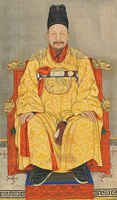
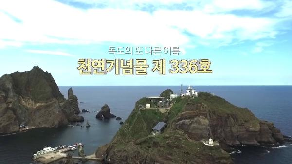

· 512년: 신라 지증왕 13년에 이사부, 우산국 정복하여 신라 영토에 편입됨(삼국사기 기록)
· 1693년: 동래 어부 안용복이 울릉도 근해에서 왜인을 발견해 퇴거시키고, 일본 애도막부에게 울릉도·독도가 조선 영토임을 서계를 받음(숙종 실록 기록)
· 1900년: 고종, 칙령 제41호 제정 반포로 울릉도를 울도로 개칭하고 도감을 군수로 하며 독도를 울도군 관할로 편입함
· 1907년: 울릉도 및 독도의 관할권이 강원도에서 경상도로 이속
· 1946년: GHO(연합국 최고사령부)에서 SCAPIN(연합국 최고사령부 지령) 제677호에 의거하여 독도를 일본 통치권에서 제외
· 1953년: 독도의용수비대 조직(대장 홍순칠․대원 32명)
· 1956년: 국립 경찰, 독도 경비 인계
· 1981년: 독도 주민증 최초 전입(최종덕, 울릉읍 도동리 산67)
· 1982년: 국가지정 문화재로 지정 - 천연기념물 제336호(독도해조류 번식지)
· 2000년: 행정구역 명칭 및 지번 변경(행정구역: 도동리 → 독도리(서반-1반, 동도-2반) / 지번: 도동리 산42∼76번지 → 독도리 산1∼37번지